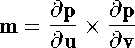
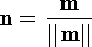

![[Front]](images/OpenGL3.gif)
![[Reference]](../buttons/ReferenceOff.gif)
![[Imp. Guide]](../buttons/ImpGuideOff.gif)
![[Index]](../buttons/IndexOff.gif)
![[Prev]](buttons/ArrowLeftOff.gif)
![[Next]](buttons/ArrowRightOff.gif)
![[Up]](buttons/ArrowUpOff.gif) C Specification
C Specification
void glEvalCoord1d(
GLdouble u)
void glEvalCoord1f(
GLfloat u)
void glEvalCoord2d(
GLdouble u,
GLdouble v)
void glEvalCoord2f(
GLfloat u,
GLfloat v)
void glEvalCoord1dv(
const GLdouble *u)
void glEvalCoord1fv(
const GLfloat *u)
void glEvalCoord2dv(
const GLdouble *u)
void glEvalCoord2fv(
const GLfloat *u)
Parameters
DescriptionWhen one of the glEvalCoord commands is issued, all currently enabled maps of the indicated dimension are evaluated. Then, for each enabled map, it is as if the corresponding GL command had been issued with the computed value. That is, if GL_MAP1_INDEX or GL_MAP2_INDEX is enabled, a glIndex command is simulated. If GL_MAP1_COLOR_4 or GL_MAP2_COLOR_4 is enabled, a glColor command is simulated. If GL_MAP1_NORMAL or GL_MAP2_NORMAL is enabled, a normal vector is produced, and if any of GL_MAP1_TEXTURE_COORD_1, GL_MAP1_TEXTURE_COORD_2, GL_MAP1_TEXTURE_COORD_3, GL_MAP1_TEXTURE_COORD_4, GL_MAP2_TEXTURE_COORD_1, GL_MAP2_TEXTURE_COORD_2, GL_MAP2_TEXTURE_COORD_3, or GL_MAP2_TEXTURE_COORD_4 is enabled, then an appropriate glTexCoord command is simulated.
For color, color index, normal, and texture coordinates the GL uses evaluated values instead of current values for those evaluations that are enabled, and current values otherwise, However, the evaluated values do not update the current values. Thus, if glVertex commands are interspersed with glEvalCoord commands, the color, normal, and texture coordinates associated with the glVertex commands are not affected by the values generated by the glEvalCoord commands, but only by the most recent glColor, glIndex, glNormal, and glTexCoord commands.
No commands are issued for maps that are not enabled. If more than one texture evaluation is enabled for a particular dimension (for example, GL_MAP2_TEXTURE_COORD_1 and GL_MAP2_TEXTURE_COORD_2), then only the evaluation of the map that produces the larger number of coordinates (in this case, GL_MAP2_TEXTURE_COORD_2) is carried out. GL_MAP1_VERTEX_4 overrides GL_MAP1_VERTEX_3, and GL_MAP2_VERTEX_4 overrides GL_MAP2_VERTEX_3, in the same manner. If neither a three- nor a four-component vertex map is enabled for the specified dimension, the glEvalCoord command is ignored.
If you have enabled automatic normal generation, by calling glEnable with argument GL_AUTO_NORMAL, glEvalCoord2 generates surface normals analytically, regardless of the contents or enabling of the GL_MAP2_NORMAL map. Let

Then the generated normal n is

If automatic normal generation is disabled, the corresponding normal map GL_MAP2_NORMAL, if enabled, is used to produce a normal. If neither automatic normal generation nor a normal map is enabled, no normal is generated for glEvalCoord2 commands.
Associated Gets
See Also